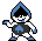
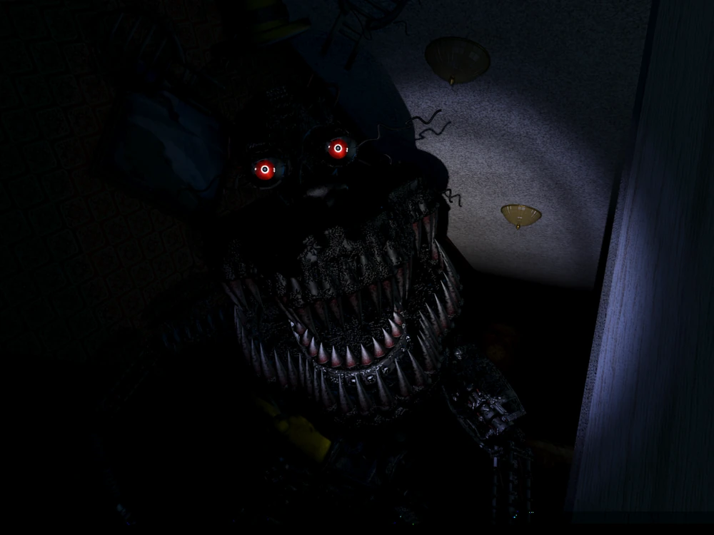
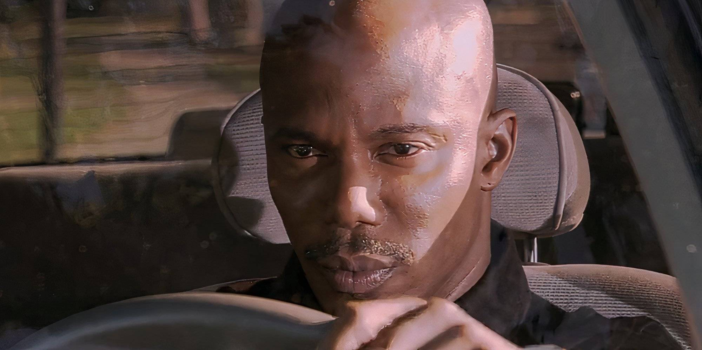
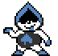
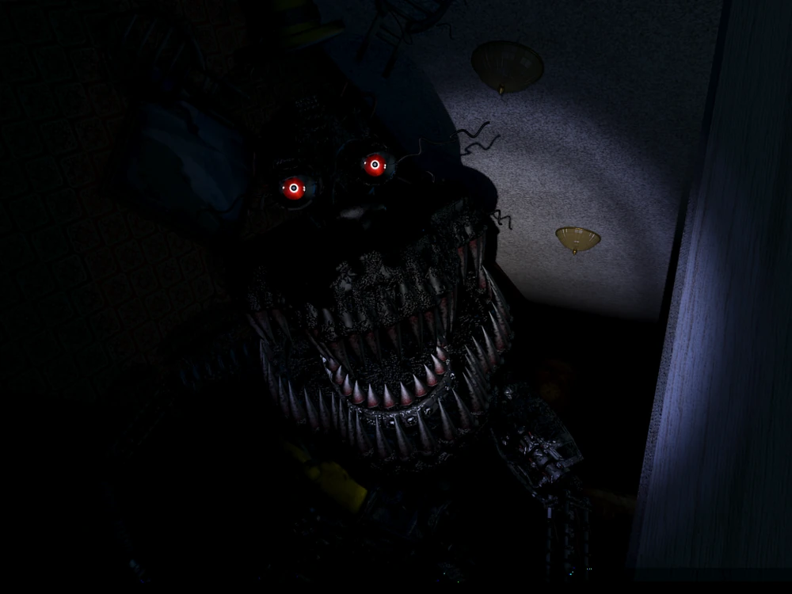
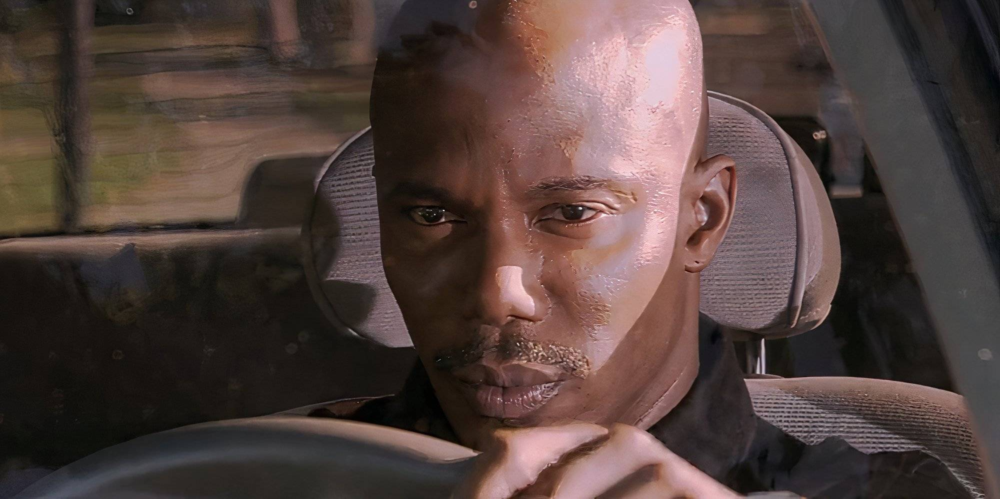

Projects
Technical Projects

Arithmetic Logic Unit
This program was created in VHDL and implemented into an FPGA board.
The user is inputs two 8-bit binary numbers, updated with the clock during operation.
The ALU performs 1 of 8 operations based on a given decoded states from the fsm.
The input, signed output, student number (fsm code) is
displayed on board's sseg displays. For debugging, the actual state resulting from the
fsm is display on LEDs.
Source code
Project report
Digit Recognition Neural Network
Programmed in Python, utilizing Pytorch for the training model, this program trains a
convolutional neural network to predict handwritten digits. I created the model as a study
to help understand parts of a neural network and how training data affects the model's performance.
The model consists of:
two convolution layers to convert the input to feature maps. Two activation layers using ReLu
and max pooling to break linearity and reduce spatial size. Two intermediate linear layers to
flatten features for the next layer, and a final flatten layer for the output (view). I also
added a dropout layer to reduce overfitting.
Source code
SoccerBot
Developed a soccer bot for a competition. I assembled the bot with a kit, wired it, and created
a bracket model for it (as seen in slide 1).
Using pre-existing source code, I made macro buttons for the bot to spin faster, utilizing
the back to hit the ball. The bracket design on the front (golden) was designed in
OnShape while the back bracket (green) was improvised to due printing issues.
(note: hold shift+drag to change the model origin)
Source Code
BookStore Application
I led team of 3 for this application, utilizing Github for collaboration. The
application was coded in Java and JavaFX for the GUI. The program was developed using
UML/use-case diagrams and constructed following the State Design Pattern.
An interactive book store application with GUI. It follows requirements given by the
client such as an admin menu, points program, a checkout for the customer.
Source code
Project report


Data Processing Program
This program was create in C and utilized GNUPlot to create the graphs.
Each graph used a different data files provided by the program to visualize specific
data collected such as Average Land Temperatures within a certain time period.
The program analyzes data for global temperature of land and oceans. It isolates the data
into categories, performs operations to identify trends, then extracted the results into
new files.
Source code
Project report
USER vs AI Fighting Game
A text-only fighting game made in Java. 4 characters can be chosen to face off against a computer.
3 options are available for actions, Attack with chance of a critical (extra damage), Defend
with a chance of parrying (reflects damage), and Ultimate, unlocked with 3 criticals.
The computer plays based on a risk reward weighting system. The computer
may reset it's strategy if it is not working out by zeroing variables or go all out if it
has nothing to lose. The computer will also adjust it's playstyle based on the characters
such as Spongebob, who has a high risk high reward playstyle.
Source code
WEBSITE
A website I created from scratch using HTML, CSS, and JavaScript to outline projects
I have enjoyed doing. I created a Github repository to both host my website and push any updates.
The photo above is how the website initially looked (August 4th, 2025). You can see all the commits
I have done since then through the Github repository.
Using Visual Studio Code (VSC) with the Live Server plugin, I have a live view
of the website. I used this to create adaptive website features for both mobile and
desktop.
Click the button ->
Website Link
Source Code
Random Cat Link
Non-Technical Projects
Company Logos
Sets of logos I created for a fictional space company called Roman, created in Adobe Photoshop. I created 4 different color schemes for the company to use and a special purple design (used for special events).
The Elevator
My favorite media project. The story is a reference to a previous mini-film I made called
The Basement (live-action). My biggest challenge was my drawing skills. I had done 4 stickman
animation projects before but never full body, I studied many art-styles beforehand to prepare.
The second slide is a quick view into how I sorted the project. I used Adobe Animate,
Premiere Pro, and Photoshop (backgrounds) to everything for the animation.


Experimental Photography
Some experimental photos I took using a Fujifilm X-T200. I ripped the photos out of different albums to give a
taste of the types of photos I took.
No photo manipulation was done, the only editing done was with Adobe Lightroom. The light spiral photos
were taken with an led candle and very long exposure, looking closely you may be able to see my phantom.
Business Cards
Business cards for a character named Jotaro Kujo, created in Adobe Photoshop. I came up with 3 different designs.
My personal favorite is the slide 1 design as it shows a badge Jotaro wears as opposed to himself, making it easier
to associated him with something.
Each card is representative of Jotaro Kujo's attire or personality. I added some mini easter eggs
into the designs such as the "oceanman.com", referring Ocean Man by Ween, commonly associated to him.
King Crimsons Ability
My very first full animation created using Adobe Animate and Premiere Pro. The story is based on Diavolo from Jojo's Bizarre Adventure and his ability King Crimson.
I had no prior knowledge in animation techniques so I prepared by watching a lot of videos on techniques to use.
Astro photography
Some photos I took of celestial objects over the years. All photos taken through a Celestron 80AZ Telescope
using 20mm lenses for the moon and a 10mm lense for Saturn. All the photos were taken by hand without tripods.
*The Blood Moon photo is not a true Blood Moon resulting from a lunar eclipse but the photo color itself
is completely unedited.
Background Color